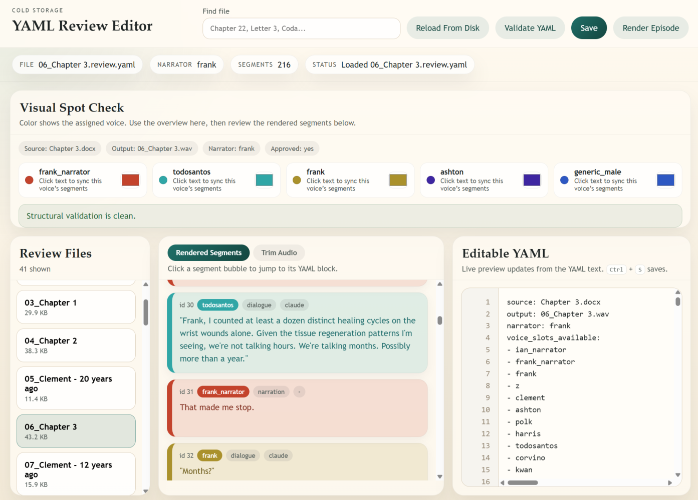
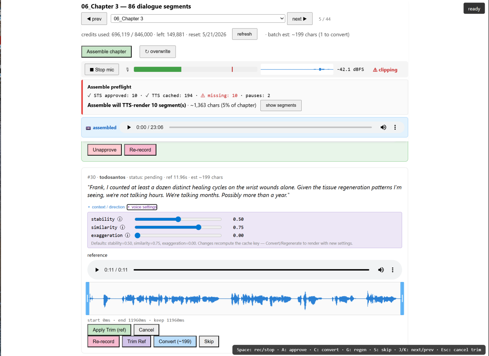

I wrote a literary crime novel called Cold Storage. It's set in a city where forty-three faiths hold legal standing. Two narrators alternate. Somewhere north of two dozen named characters speak on the page. Once the book was finished, I figured What The Heck, let's record the audiobook too.
I get bored too easily.
When I started thinking about an audiobook, the off-the-shelf options didn't fit. A single narrator doing all the voices flattens a book that depends on register switching. A professional cast and recording was a nonstarter for a passion project.
The ElevenLabs Studio GUI works fine for shorter material but gets quietly expensive at full-book scale, and its API is gated behind a Pro-tier sales conversation I couldn't justify until I knew the workflow would even hold together.
I built the pipeline myself. Two months of evenings with Claude Code as a pair programmer. Four stages, around three thousand lines of Python and a thousand of vanilla HTML and JavaScript. No frameworks. I'm calling it Compositor, after the print-shop role for the worker who arranged the metal type letter by letter. The shop, in this case, has a staff of one.
Want to read the book? I'm in the process of querying agents now; it'll find a home eventually. Send me an email and I might send you the manuscript. Want to build something like this for your own novel? Send me an email, and I'll point you at the code.
Here is what I learned.
1. Compile the manuscript
The book lives as a series of .docx files, one per chapter in a OneDrive folder. Each chapter is its own file because I edit ruthlessly, and a 90,000-word monolith is a UX disaster in Word. The downside is that "the manuscript" never exists as a single artifact until I make it.
I wrote a VBA macro that opens every chapter in order, copies the contents into a fresh master document, applies the cover page, generates the table of contents, runs an Aptos typography pass, and saves the result to a uniquely ID'd file. Every build is timestamped. Nothing ever gets overwritten.
One lesson, in retrospect: build the compile step before anything else. A reproducible, dated artifact is the foundation everything downstream keys off. Voice attribution. Sample pages for query submissions. The audiobook pipeline. Without a one-click compile, you end up arguing with yourself about which copy is canonical.
I chose VBA over a Python plus Pandoc pipeline because Word's footnote, comment, and styling behavior is much easier to preserve when you stay inside Word. It was the right call. The macro is sixty lines.
2. Giving it a voice
This is the part of the pipeline I spent the most time on. If you get it wrong, every downstream stage compounds the error.
Each compiled manuscript gets segmented into paragraphs and then into per-line segments. Narration on its own. Dialogue split out. Pauses inserted. Every segment becomes a row in a YAML file, which becomes the source of truth, and is human-readable on purpose. I can open it in any editor, see one segment per block, and confirm "yes, this is Frank, not Ashton" by eye.
Attribution itself runs in two passes:
- Regex pass. Heuristics catch the easy cases. Dialogue immediately preceded by "said Frank" or "Ashton asked" or attribution-by-pronoun-and-action. This handles maybe half the dialogue mechanically.
- LLM refinement. What's left gets sent to a Claude Haiku call with three paragraphs of surrounding context. Fragmentary attributions. Echo dialogue. Conversations where two characters trade five lines with no tags.

The combined accuracy on my book is around 99% across roughly 3,500 dialogue segments. I review by hand for the last one percent, which I do anyway because a couple of edge cases genuinely need eyes. Echo dialogue is the canonical trap: "After." / "After.", said in turn by two different characters, with no surrounding attribution. Both regex and LLM get it wrong about a third of the time, and the only fix is to read the manuscript.
I had never used YAML before this. It diffs cleanly in git. It opens in any editor. The author can fix a misattribution by typing voice: clement and saving the file. A database would have been faster to query and slower to live with.
Another lesson here is that two passes beat one model. The LLM is overkill for "she said, Ashton replied." Regex first, LLM only on what regex couldn't decide, ends up dramatically cheaper and faster than asking an LLM to do everything.
3. Recording packets
To record audio for a multi-voice book, the "actor" (read: me) needs three things per line: the text to read, the surrounding context, and a direction note. I generate a recording packet per chapter that bundles all three.
The packet is a folder. Inside it:
shotlist.json, machine-readable list of segments to record, with text, voice, segment ID, and rationale.shotlist.md, the same content formatted for human reading, with "before / line / after / rationale" blocks.recording.docx, a Word version for actors who'd rather work in Word than in a code editor.
The rationale field is the part I underestimated. Lines like "The lateral cabinets," are almost impossible to read well in isolation. They make no emotional sense as a standalone fragment. Once the rationale reads "Maren opens the handoff with her back turned; the fragment is the decision being made aloud, professional and deliberate, the first words of a risk she has chosen to take," the actor knows exactly what to do with it.

I write director's notes as a structured field in the YAML, not as freeform comments. They show up in the recording UI and in the shotlist docs. The same note that helps a human actor helps a future-me who is redoing a take six months later.
4. STS rendering and assembly
This is where the audiobook actually gets made. The architecture has three layers.
The TTS layer (Text to Speech) renders any line nobody recorded as a performance. It hits the ElevenLabs API per segment, applies the voice's gain calibration, and stores the result by content hash. Cache key is a SHA-256 of text plus voice ID plus voice settings plus model plus pronunciation dictionary version. The same inputs always produce the same key, so deduplication is automatic. Two segments with identical text and voice share one cache file. Re-rendering after small edits is essentially free because most segments hash to the same key as before.
The STS layer is the custom web tool that handles the human-performed lines. I open it in a browser, pick a chapter, hit Record on a line, speak it into my mic. The local server uploads the take to ElevenLabs' Speech-to-Speech endpoint with the target character's voice. STS preserves my prosody and timing (every breath, every hesitation) but swaps in the character's timbre. The result is "my acting, performed by Frank Carlotti."
The STS tool grew a lot of features I didn't plan for:
- A waveform editor with drag handles for trimming clicks off the start and end of takes.
- Auto-trim on upload. Asymmetric, after the first version ate everyone's final consonants: aggressive on the head (where mouse-click bleeds happen), gentle on the tail (where soft fricatives live).
- A live level meter and scrolling waveform so I can see whether the mic is actually picking me up before I waste a take.
- Take history. Every Convert or Regenerate archives the previous take. I can A/B between attempts. I never lose audio I've already paid for.
- Per-segment overrides for stability, similarity, and style exaggeration, with hover tooltips explaining what each parameter does.
- A streaming "Assemble Chapter" button that runs the renderer end-to-end with live progress in the browser.
The assembly layer (reassemble_chapter.py) is pure ffmpeg stitching. It walks the manifest, pulls each segment's MP3 from cache, applies the inter-segment silences encoded in the manifest, and concats it all into one chapter WAV. No API calls. No credit cost. Forty seconds for a chapter.
Two things made the difference here. First, cache by content, not by position. Renaming, moving, or restructuring the manuscript doesn't break the cache because the cache doesn't care where a segment lives in the book. Second, mirror the machine layout to a human-readable one. The cache is opaque hashes, useless to browse. So I built a parallel layout that the tools also write to. When I want Maren's third line in chapter thirteen, I can find 015_generic_female_the_old.mp3 in a Finder window in two seconds.
Cost transparency turned out to matter more than I expected. Every STS conversion is paid. The UI shows current credit balance, computes per-segment cost from the reference audio duration, and runs a preflight that estimates how many characters of TTS the next Assemble will burn. If the answer is twelve characters, I click without thinking. If the answer is forty-three thousand, I look first. This becomes increasingly important as you learn, inevitably, that you need to do an edit, or change a sentence. By breaking things down so granularly, I can swap whole chapters, paragraphs, or individual lines and only spend tokens on the new characters. The chapter gets stitched in and normalized, and I kept costs down.
Mistakes
A clean retrospective would be a lie.
I burned a day chasing the ElevenLabs Studio API before discovering it was tier-gated behind a sales conversation.
A cache-key bug took an infuriating time to find. My STS pipeline used a stale pronunciation-dictionary version ID from a config file, whereas my TTS pipeline retrieved the live version from the API at startup. Result: every cache key disagreed by one field. STS approvals went to one address. The assembler looked at another. A chapter rendered "perfectly" but with the wrong audio for every line I'd approved. The fix was three lines, once I knew where to look. Have the STS pipeline make the same API call the TTS pipeline did. The bug took an evening to find because everything looked like it was working, until I listened.
If two systems are supposed to compute the same key, write a test that confirms it. Or, in my case, write a one-shot migration that compares old keys to new keys and reports drift. I have that now.
What's next
The remaining 1,500 dialogue lines of the book. Full reassembly into 41 chapters. An ID3-tagged release in M4B format for podcast players.
I'm publishing Cold Storage the conventional way, querying agents and submitting samples. The audiobook is for me. I wanted a thing I could hand to someone and say, here, this is what I made. If the production suite turns out to be useful to other writers in the same boat, that's a bonus.
Compositor runs entirely on my local machine. The git repo will be public when I clean it up enough to share.
A few things I would do differently from day one. Pick the cache-key fields early and treat them as a versioned contract. Build the compile step first. Write director's notes as data, not as comments. Cache everything. Don't trust OneDrive.
Building an AI workflow with real output quality stakes?
If you're wiring models into a production pipeline and want help deciding where the review points, caches, and quality gates belong, Edgecaser can help you think it through.
Let's talk about your product